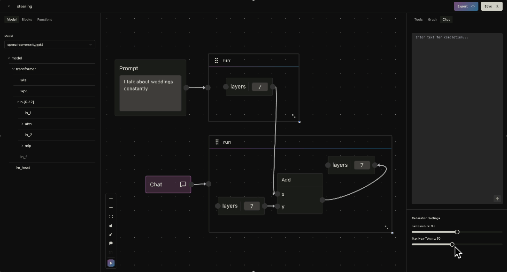

First grid item content
Second grid item content
Third grid item content
This post is a writeup for some early ideas of what a whitebox AI interface might look like.
How do we make interpretability research accessible?
I built an interface for white box interaction with language models. It provides a simple, visual language for expressing interventions. I’ll illustrate its usage by implementing three common interpretability techniques.
Logit lens is an early exit technique which directly decodes hidden states into vocabulary space using the model’s unembedding matrix.
We investigate how the model completes the sentence “The Eiffel Tower is located in the city of”. To do so, we’ll build a small program to track the probability of the correct token, _Paris, at each layer.
Every program in the interface starts with a run context. The context represents a single forward pass of a model; in this example, we’ve loaded GPT2 for study. We’d like to view the probability for the token _Paris at each layer of GPT2, so we drag a module node from the tree into the canvas. To capture activations from a module, simply drag from its handle. Connecting to another valid handle creates a directed edge, denoting a get operation.
Transformers are composed of a series of identical layers. We wrap the module node with a loop context to get activations at each layer. The context accepts some start/end indices and returns a variable which we enter as the index in our module node. GPT2 has twelve layers, so we loop accordingly.
Function nodes enable arbitrary code injection, allowing any PyTorch program to be represented in the interface. Within the code editor, we enter some arguments and write two short lines of code that return the probability over _Paris.
[[side by side of editor and function in python, showing how they are the same]]
We append the output of the function to a list. Finally, we add a graph node at the end to visualize the outputs. When we execute the program, we can open up a graphing panel to the right where we can visualize the outputs of the intervention.
Figure 1: This graph displays the probability over the token _Paris at each layer of GPT2.
Turner et al. 2023 demonstrate a simple method where combining forward passes can be used to steer completions. We replicate an example from their post to steer GPT2 to talk about weddings in unrelated contexts.

Here, we use two run contexts for two forward passes: one to collect activations from a wedding prompt and one to steer. We get the wedding activation at some middle layer and add it to the activation of a different prompt. An edge to a module handle denotes a set operation, replacing the activations.
This method of activation steering is a little finicky; we can open the toolbar on the right to check whether the prompts are of compatible length.
We generate multiple tokens by opening the chat tab to the right. Text we write here is passed as input to a run context that uses the chat node.
In fact, we can literally chat with our interventions; loading an instruct or chat tuned model opens a conversational interface.
Activation patching highlights the causal importance of certain points during a model’s computation. This technique is more involved, so I’ll mostly highlight features rather than discussing implementation details.
[[picture of intervention with different passes labeled with numbers]]
We run the model three times. (1) We compute a baseline prediction from a “clean” prompt. (2) Then we run a “corrupted” prompt in which the subjects are swapped. We cache the layer activations and logits over the “corrupted” completion.
(3) Finally, we run the model on a corrupted input but restore activations at different token/layer positions. Here, we use the batch context to run multiple inputs in a single forward pass. For each batched run, the effect is:
$$\text{effect} = \frac{\text{restored} - \text{corrupted}}{\text{clean} - \text{corrupted}}$$
We visualize the intervention as before, this time with a heatmap.
[[gif of running the intervention, selecting heatmap]]
This intervention is more complex, but it follows from the primitives discussed above. Arguably the coolest feature of NNterface is the ability to export our interventions to NNsight code in Python!
I had a lot of fun learning Svelte and writing the visual compiler for this project, but I don’t plan on pursuing it further. At the point a user is learning my visual language, they might as well learn NNsight. It's a beautiful library with a similar goal of separability between experimentation and engineering in Python.
However, this project is a great way to communicate interpretability techniques. For example, an inexperienced user could play around with activation patching, testing different metrics or saving outputs from different modules. The hands-on experience without a coding prior makes it easy to learn about interventions.
There are a couple immediate extensions from my final product.
Much thanks to Jaden Fiotto Kaufmann for building the NNsight library.